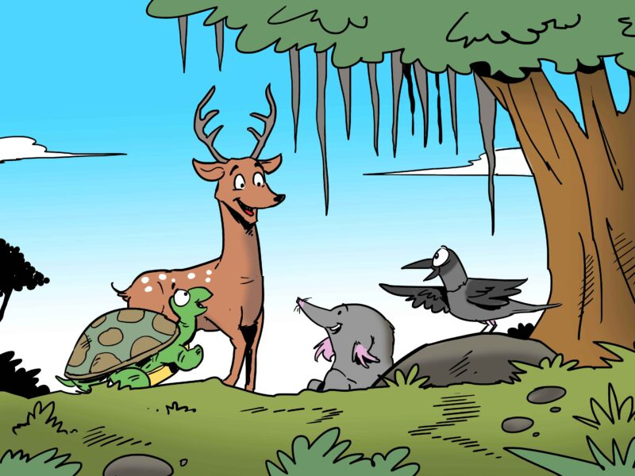

One day, the deer did not turn up at the usual time. The mole, tortoise and crow were worried. The mole turned to the crow, “I think you better fly around and see where the deer is.” The crow nodded her head and flew away.
She didn’t have to fly too far to find the deer. Unfortunately, the deer was trapped in a hunter’s net! “Friend deer! What happened?” the crow cried.
The deer sighed, “I am normally very careful in where I put my step. But this net was well-hidden. I am now trapped. It is only a matter of time before the hunter gets here.”
“I’ll get some help,” the crow said as she flapped away. She quickly flew to the banyan tree where the mole and tortoise were waiting. She told them everything that had happened.
“Friend tortoise, you wait right here,” said the mole, “I will go with the crow and cut the net our friend is trapped in with my sharp teeth.”
The crow picked up the mole in her beak and flew quickly to the spot where the deer was trapped.
The deer was happy to see his friends. The mole start cutting through the net. It was hard work, but soon the deer was free. “Thank you friend mole!” the deer cried out as he stepped out of the net.
“Ah! Looks like our friend is free!” came a voice from the bushes. It was the tortoise who had walked slowly to the spot.
At same moment, the hunter arrived. The deer ran swiftly. The crow flew away. The mole quickly dug a hole to hide in. But the tortoise was too slow.